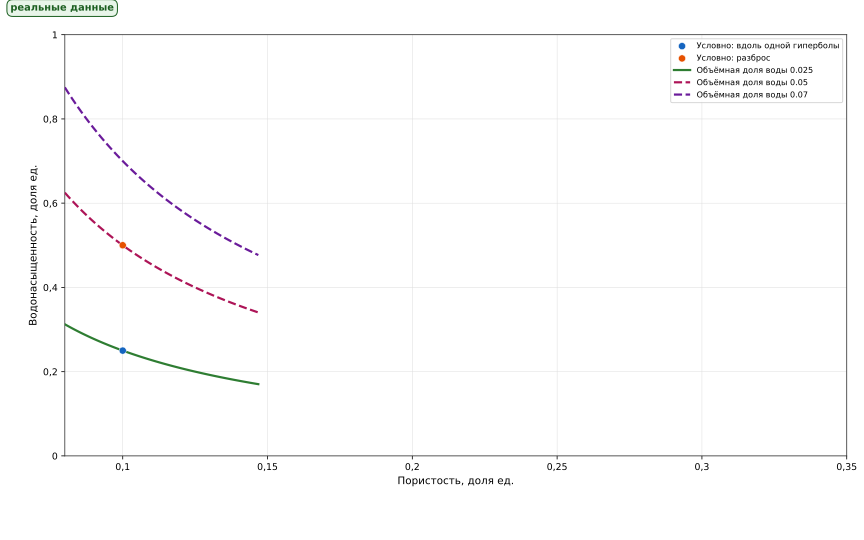
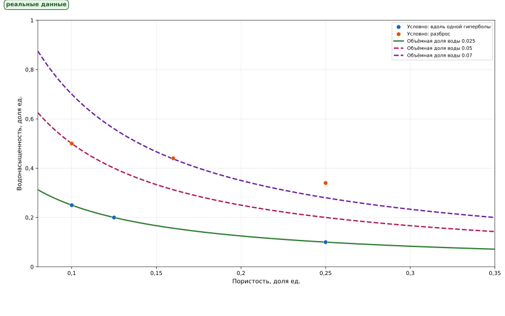
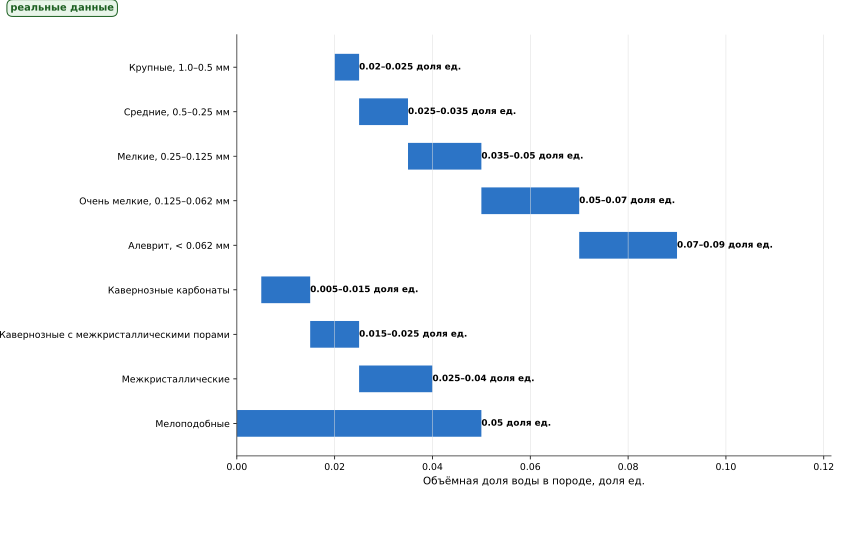
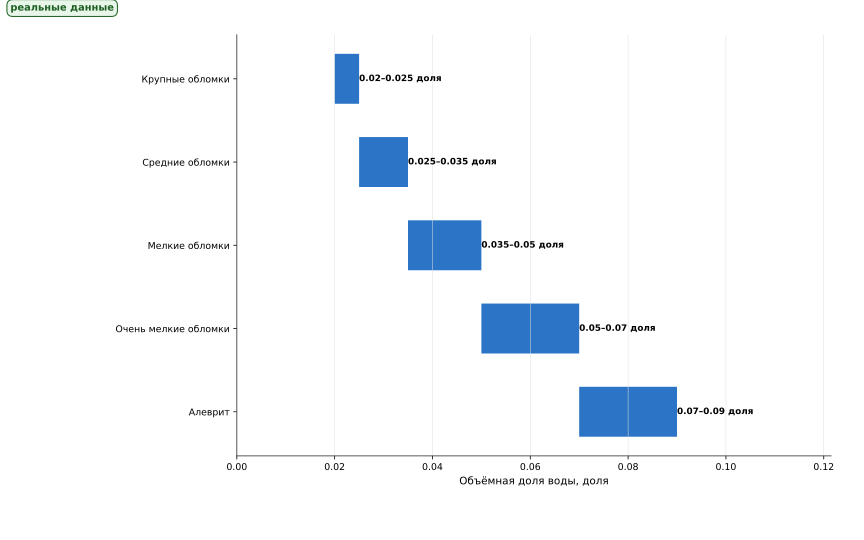

Смотрите, лежат ли точки вдоль одной кривой или заметно разбросаны.
Размер зёрен даёт дополнительный контекст для объёмной доли воды.
Пороговая идея. Скопление точек на одной линии равной доли воды и разброс по нескольким линиям — разные признаки. модель
Интерактив: как это происходит



1 / 3
Начните с вопроса: можно ли сравнить зоны только по тому, сколько воды в порах?
Допущения: Пары координат точек условные: исходных измерений скважин узел не содержит.; Изолинии 0.025, 0.05 и 0.07 взяты как демонстрационные уровни в пределах названных в узле значений; они не пороги..
Как это работает
Как читать график
Диаграмма Баклса сопоставляет пористость и водонасыщенность. Гипербола здесь соединяет точки одинаковой объёмной доли воды. Вне неснижаемой водонасыщенности эта доля может сильно различаться. Графики авторов используют данные трёх скважин ордовикской зоны B Ред-Ривер. Скважины расположены на месторождении Бивер-Крик в Северной Дакоте. стр. 131
«A formation not at irreducible water saturation ($S_{w\ irr}$) exhibits wide variations in bulk volume water values.»
«The Buckles plot (Buckles, 1965) is a graph of porosity ($\phi$) versus $S_w$.»
«Points of equal $BVW$ form hyperbolic curves across this plot.»
«Figure 7.3 illustrates Buckles plots using data from three wells in the Ordovician Red River B-zone, Beaver Creek Field, North Dakota.»
Что видно
При неснижаемой водонасыщенности точки ложатся вдоль одной гиперболы. При большей доле добываемой воды точки сильнее разбросаны. стр. 131
«If $BVW$ is plotted using data from a formation at irreducible water saturation, the points fall along a single hyperbolic curve (Figure 7.3a).»
«If the data come from reservoirs with higher percentages of produced water, the points are more scattered (Figures 7.3b and 7.3c).»
Размер зёрен
При уменьшении зёрен порода удерживает больше воды капиллярным давлением. Поэтому объёмная доля воды увеличивается. Авторы сравнивают долю воды по размерам зёрен и типам породы в таблице. стр. 131
«Because the amount of water a formation can hold by capillary pressure increases with decreasing grain size,»
«the bulk volume water also increases with decreasing grain size.»
«Table 7.1 illustrates the relationship of bulk volume water values to decreasing grain size and lithology.»

Табличные диапазоны для обломочных пород. Чем мельче зёрна, тем выше доля удерживаемой воды.
Класс A · реальные данные · нарисовано кодом · стр. 131
Обломочные породы
Алеврит — материал из очень мелких зёрен. У крупных обломков размером 1,0–0,5 мм доля воды равна 0,02–0,025. У средних обломков размером 0,5–0,25 мм доля воды равна 0,025–0,035. У мелких обломков размером 0,25–0,125 мм доля воды равна 0,035–0,05. Для очень мелких обломков размером 0,125–0,062 мм доля воды равна 0,05–0,07. Для алеврита с размером зёрен меньше 0,062 мм доля воды равна 0,07–0,09. стр. 131
«| Coarse | 1.0 to 0.5 | 0.02 to 0.025 |
| Medium | 0.5 to 0.25 | 0.025 to 0.035 |»
«| Fine | 0.25 to 0.125 | 0.035 to 0.05 |
| Very Fine | 0.125 to 0.062 | 0.05 to 0.07 |»
«| Silt | < 0.062 | 0.07 to 0.09 |»
Карбонатные породы
Кавернозные поры — полости в породе. Межкристаллические поры находятся между кристаллами. У кавернозных карбонатов доля воды равна 0,005–0,015. У кавернозных карбонатов с межкристаллическими порами доля воды равна 0,015–0,025. Для межкристаллического типа доля воды равна 0,025–0,04, для мелоподобного — 0,05. Авторы советуют использовать эти значения только как очень общий ориентир. стр. 131
«| Vuggy | | 0.005 to 0.015 |
| Vuggy and intercrystalline (intergranular) | | 0.015 to 0.025 |»
Карбонатные значения пригодны лишь как очень общий ориентир по типу пористости. допущение
«The bulk volume water values for carbonates should be used only as a very general guide to different types of porosity.»
Исходный текст урока
Стр. 131 · BULK VOLUME WATER
A formation not at irreducible water saturation ($S_{w\ irr}$) exhibits wide variations in bulk volume water values. The Buckles plot (Buckles, 1965) is a graph of porosity ($\phi$) versus $S_w$. Points of equal $BVW$ form hyperbolic curves across this plot. Figure 7.3 illustrates Buckles plots using data from three wells in the Ordovician Red River B-zone, Beaver Creek Field, North Dakota. If $BVW$ is plotted using data from a formation at irreducible water saturation, the points fall along a single hyperbolic curve (Figure 7.3a). If the data come from reservoirs with higher percentages of produced water, the points are more scattered (Figures 7.3b and 7.3c).
Стр. 131 · BULK VOLUME WATER
Because the amount of water a formation can hold by capillary pressure increases with decreasing grain size, the bulk volume water also increases with decreasing grain size. Table 7.1 illustrates the relationship of bulk volume water values to decreasing grain size and lithology.
Стр. 131 · BULK VOLUME WATER
Table 7.1. Bulk volume water ($BVW$) as a function of grain size and lithology. A comparative chart. | Lithology | Grain Size (millimeters) | Bulk Volume Water ($BVW$) | | --- | --- | --- | | *Clastics* | | | | Coarse | 1.0 to 0.5 | 0.02 to 0.025 | | Medium | 0.5 to 0.25 | 0.025 to 0.035 | | Fine | 0.25 to 0.125 | 0.035 to 0.05 | | Very Fine | 0.125 to 0.062 | 0.05 to 0.07 | | Silt | < 0.062 | 0.07 to 0.09 | | *Carbonates* | | | | Vuggy | | 0.005 to 0.015 | | Vuggy and intercrystalline (intergranular) | | 0.015 to 0.025 | | Intercrystalline | | 0.025 to 0.04 | | Chalky | | 0.05 |
Стр. 131 · BULK VOLUME WATER
The bulk volume water values for carbonates should be used only as a very general guide to different types of porosity.